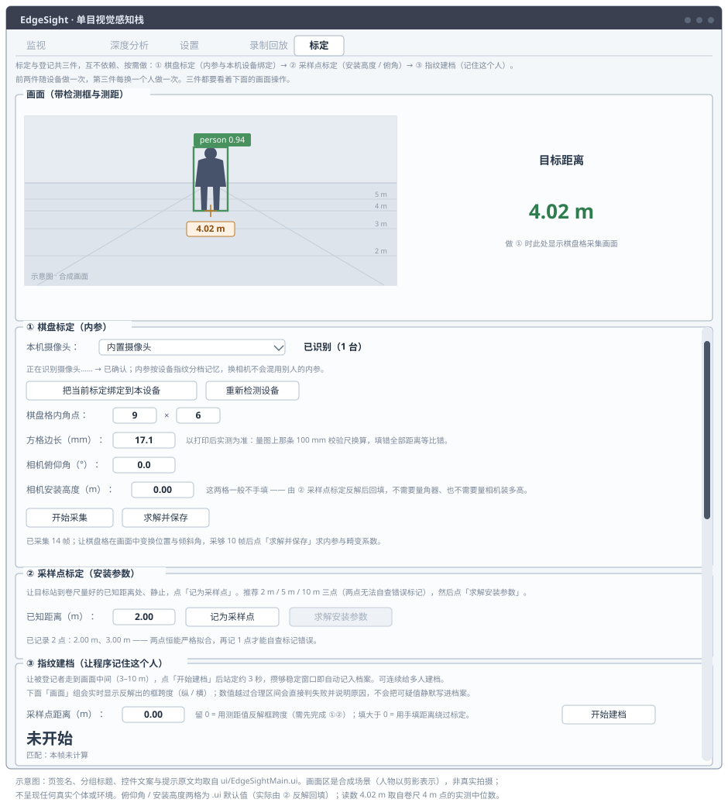
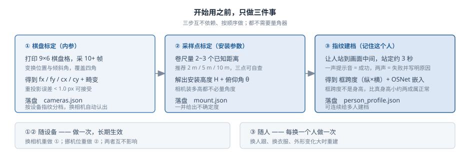
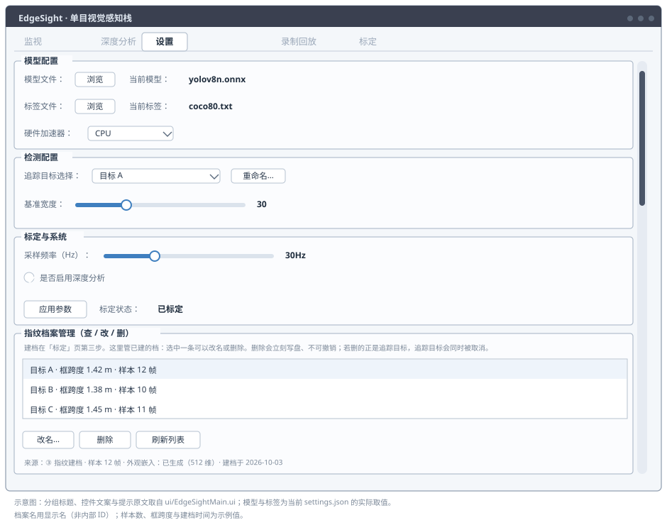
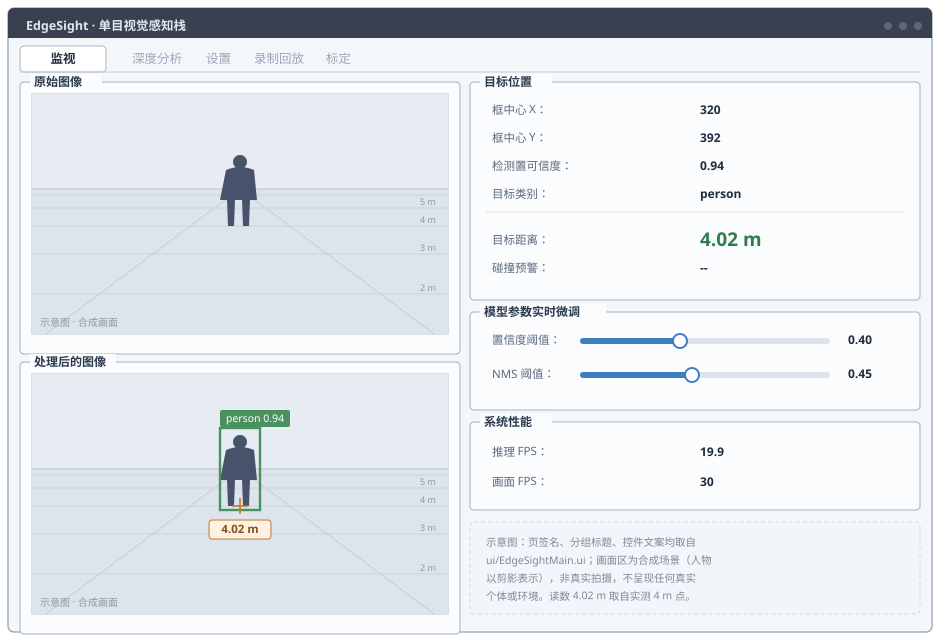
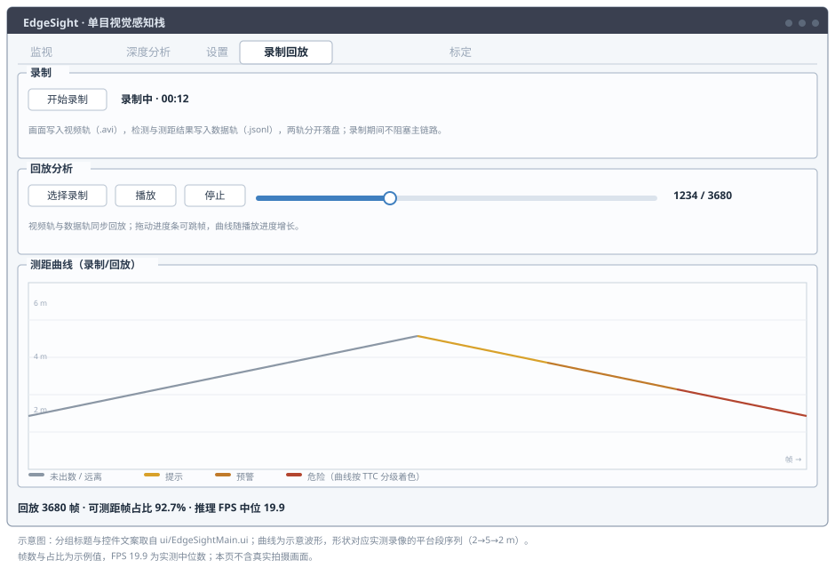

EdgeSight 操作指引
照着做一遍，就能从摄像头画面里读出米制距离。全程约 40 分钟：打印棋盘格 → 标定 → 采样点标定 → 建档 → 看读数 → 录一段。需要的东西只有三样：打印机 + 一张 A4 纸、一把卷尺、一个人。
这份文件和仓库里的 EVALUATION.md 是配套的：
本文件写「一步步照着做」，EVALUATION 写「怎么量、合格线多少」。
两份一起看 —— 做完了想知道过没过，去 EVALUATION。
0 · 先认识一下界面 （1 分钟）
程序一共五个页签，这一步到下一步按顺序走就行：
| 页签 | 这一步用它干什么 |
|---|
| 标定 | ① 棋盘标定（内参）→ ② 采样点标定（装多高、朝下多少度）→ ③ 指纹建档 |
| 设置 | 指定追踪目标、管理人员档案 |
| 监视 | 看实时画面、距离读数、碰撞预警 |
| 录制回放 | 录一段、回放、看距离曲线 |
| 深度分析 | 看最近几秒的曲线（默认关闭，设置页勾选后才画） |
1 · 打印棋盘格 （约 5 分钟）
- 打印本文件夹里的 chessboard_A4_9x6_18mm.png。
打印对话框里缩放必须选「实际大小 / 100%」，绝不能选「适应页面」。
- 拿尺子量图上那条标着 0 到 100 的校验尺：
量出来正好 100 mm → 方格就是 18 mm，直接下一步。
量出来不是 100 mm（比如 95 mm）→ 实际方格边长 = 18 × 实测量 ÷ 100。
例：量到 95 mm → 方格 = 17.1 mm，这个数第 2 步要填进软件。
- 把纸贴在硬纸板上压平。纸软了、卷了、有褶皱，标定精度都会掉。
2 · 标定相机（内参） （约 10 分钟，「标定」页 ① 组）

标定页：画面固定在顶部（左画面 + 右大号距离数字），下面按 ① 棋盘标定 → ② 采样点标定 → ③ 指纹建档 排列。
- 运行 main_windows.py。摄像头自动打开，模型自动加载 ——
状态栏出现「AI模型加载并初始化成功」就可以开始了，不用手动选模型。
- 切到 「标定」页 → ① 组「棋盘标定（内参）」：
- 棋盘格内角点：保持 9 × 6（默认就是）
- 方格边长：填第 1 步量出来的实际值（17.1 是本机打印机的实测值；换了打印机就要改这一格）
- 点 开始采集，然后拿起棋盘格慢慢换位置、换角度：
- 画面的各个角落都要有（左上、右下）
- 有正对的，也有左右倾、上下倾的（15°～40° 就够，不用太斜）
- 全程完整入画，一个角点都不能出画面
- 看那行提示：「已采集 X 帧」 就是采上了；「当前帧未检测到棋盘格」就换个角度。
采到 15 帧以上就可以停（至少 10 帧）。
- 点 求解并保存（不用先停止采集）。弹窗里会给出 fx、fy、重投影误差：
重投影误差 <0.5 优｜<1.0 可接受｜≥1.0 建议重采一次。
标定结果按相机记住（像蓝牙配对）：这台相机标一次，以后插回来直接可用；
换了别的相机不会拿错内参，会提醒你重新标定。① 组顶部「本机摄像头」那栏
写着当前状态，看到 「已标定（本设备）」 就说明记好了。
3 · 采样点标定：让程序自己量出相机装多高 （约 5 分钟，② 组）

①② 随设备做一次（换相机才重做），③ 每换一个人做一次。三步都要盯着画面确认人完整入画。
这一步解出相机安装高度 H 与俯仰角 θ。不需要量角器，也不用量相机装了多高
—— 程序反解出来。你要做的只是让人在几个已知距离上各站一次。
- 用卷尺在地上量出几个距离点，做上标记。推荐 2 m / 5 m / 10 m 三点；
场地铺不开就取跨度尽量大的三点（比如 2 m / 3.5 m / 5 m），两点不推荐
—— 两点永远能完美拟合，查不出「把膝盖当成脚」这类标记错误。
- 让人站到第一个点上、站直别动，把 已知距离（m）
填成这个距离，点 记为采样点。
- 换到第二个点、第三个点，各点一次 记为采样点。
（第 2、3 个点不用再拿尺子量，但必须真的换到明显不同的距离站好
—— 原地再点一次会覆盖掉前一个点。）
- 点 求解安装参数。弹窗给出 安装高度、俯仰角和各自的不确定度
（例如
±0.5 cm / ±0.08°），自动写回并立即生效。
提示「散布偏大」 = 人还在动，站稳重采；「距离太接近」 = 两个点挨得太近，拉开差距。
4 · 建档：让程序记住这个人 （约 3 分钟，③ 组）
要让程序「只跟某一个人」，得先让它认识这个人。光站在画面里不会自动建档，必须走这一步。
- 切到 ③ 组「指纹建档」。采样点距离（m）
填人站位到镜头的距离（用卷尺量）；不知道就留 0，让程序用当前测距值反解（需先完成第 2、3 步）。
- 让人正面全身完整入画（头脚都在画面里、不贴边），点 开始建档。
- 站定约 3 秒别动，程序连续采样，攒够稳定窗口就出结论。
- 听提示音：
- 响一声 = 建档成功，大字写「已建档 · <名字>」。
- 响两声 = 建档失败，大字直接写出原因（例如量出的框跨度不在合理区间）。
越界的数据不会写进档案 —— 按那句话走近些或退后些，再站一次。
- 建完点 结束建档。想给第二个人建档，重复一遍即可。
5 · 指定追踪目标 （约 1 分钟，「设置」页）

设置页：检测配置里选追踪目标，下方「指纹档案管理（查 / 改 / 删）」管理已建的档案。
- 「设置」页 → 检测配置 → 追踪目标选择，下拉里选刚才建档的那个人。
想改名字点旁边的 重命名…。
- 切到 「监视」页，看「目标类别」那一行：
| 显示 | 意思 |
|---|
老王（追踪中） | 画面里这个人就是追踪目标，认上了 |
老王（本帧未认出） | 画面里有人，但不是他 —— 这一帧不出数 |
老王（画面无人） | 画面里没检测到人 |
person | 还没指定追踪目标，只报「检测到了什么」 |
认不出就不出数，这是设计。指定了追踪目标后，本帧匹配到的不是他
（是别人、或谁都没认出来），这一帧就当没这个人：不画框、距离显示「不可测」。
因为套在别人身上的距离看着正常、实际是另一个人的，比「不可测」更坏。
做标定（①②③）时不受影响 —— 标定页不做追踪，有框就画，否则人还没建档就没法标定了。
6 · 看读数 （「监视」页）

监视页：左边两幅画面（原始 / 叠加了框与距离），右边是目标位置、参数微调与性能。
- 「目标距离」就是米制读数。它下面那行小字说明这个数怎么来的
（接触点法 / 框跨度法（纵）/ 两法一致），不可测时那行小字就是原因。
- 「碰撞预警」给出碰撞时间 TTC，分三级：提示 ≤4 s ／ 预警 ≤2.5 s ／ 危险 ≤1.2 s。
站着不动或走远不出数，并写明原因。
- 置信度 / NMS 阈值两根滑杆调完当场生效，不用重启。
- 推理 FPS 才受模型影响，画面 FPS 是显示帧率 —— 掉帧时先看这两个的差。
走近了读不到数？这是几何限制
| 距离 | 你会看到 | 怎么用 |
|---|
| ≥ 约 2 m | 精确值（方法行写「接触点法 / 框跨度法（纵）/ 两法一致」） | 按合格线验收 |
| 约 0.6 ~ 2 m | 参考值：读数带 ？，方法写「框跨度法（横·参考）」 | 只用来减速、保持距离，别当精确值 |
| < 约 0.6 m | 一句话：目标过近：进入减速/制动区 | 刹车不需要精确数字 |
原因：主用的地面接触点法要求看得见脚。人一走近，脚就掉出画面下沿 ——
这时程序不会拿别的数糊弄你，而是明确降级为带「？」的参考值，再近就只剩定性警报。
想让更近的距离也有精确读数，就把镜头压低一点（增大俯仰角），
然后重做第 3 步让程序重新解算。详见 相机怎么装。
7 · 录一段，回来看 （约 5 分钟，「录制回放」页）

录制回放页：上面录、下面放，测距曲线随播放进度增长并按 TTC 分级着色。
- 切到 「录制回放」页，点 开始录制。
- 让人从近处走到远处再走回来，录 30~60 秒。
- 点 停止录制，弹窗显示时长、帧数、丢帧数（丢帧应为 0）。
录完会自动加载到回放页，不用手动选。
- 点 播放：视频正常播、曲线跟着进度条一起长、
距离随人走远走近而起伏。曲线按 TTC 分级着色
（灰=无告警 → 琥珀=提示 → 深橙=预警 → 红=危险），
所以「什么时候开始危险」可以直接从颜色上看出来。
画面和检测结果是分开存的（视频轨 + 数据轨），检测框没有烧进像素。
所以标定改了、参数改了，同一段录像可以重新解算一遍再对比。
8 · 读数记在这里（自己留档）
让人依次站到 2 / 3 / 4 / 5 m，每个点等读数稳定后记下来：
| 实际距离 | 合格范围（误差 ≤15%） | 软件读数 | 方法行 |
|---|
| 2 m | 1.70 ~ 2.30 m | ____ m | ______ |
| 3 m | 2.55 ~ 3.45 m | ____ m | ______ |
| 4 m | 3.40 ~ 4.60 m | ____ m | ______ |
| 5 m | 4.25 ~ 5.75 m | ____ m | ______ |
两点说明：
- 接触点法不依赖被测人的身高（它只看脚踩在地上那点在画面里的高低），
所以高矮不同的人都能测，不用换算。
- 带 「？」 的参考值、写着「框跨度法（横·参考）」的、以及「不可测」的帧
都不算 —— 别硬记成验收读数。
- 本期只验收 ≤5 m。更远的点可以记，但判据里那条 >5 m 的分支
本期未验证，对外报数必须带范围限定。
9 · 出问题先看这里
| 现象 | 多半是 | 怎么办 |
|---|
| 一直显示「未检测到棋盘格」 | 棋盘没完整入画 / 太斜 / 光线暗 / 纸反光 | 挪远一点让棋盘全部入画，倾斜别超过 45°，别让灯直射纸面 |
| 画面上一个框都没有 | 模型没加载成功 | 看状态栏有没有「AI模型加载并初始化成功」；没有就去「设置」页检查模型 / 标签文件路径，点一次 应用参数 |
| 有框但没距离数字 | 相机没标定 | 看「标定」页 ① 组状态是不是「已标定」；不是就重做第 2 步 |
| 人一走近精确读数就没了 | 脚贴近或掉出画面下沿 —— 太近了 | 读数下面那行小字写着原因。此时会给带「？」的参考值；想要更近也能精确测，就压低镜头并重做第 3 步 |
| 读数带「？」 | 近场参考值，或两法结果存疑 | 看方法行区分。近场参考值只用来减速，别当精确值（人一侧身会高估） |
| 读数突然跳到很远，小字写着「速度门控拦截」 | 检测抓错框 / 抓丢人，程序把这个跳变拦下了 | 设计行为，不是故障。画面里真换了人时，连续 3 帧一致后程序会自动重新锚定 |
| 距离一直「不可测」，原因写着「不是追踪目标」 | 认人那一关没过 | 做标定和验收时把追踪目标设为「（不指定）」即可 —— 验收是标定动作，与认谁无关 |
| 建档失败、响了两声 | 这批采样量出的框跨度不在合理区间（大字会写出实际值） | 按大字那句走近些或退后些，再站一次。可疑数据不会写进档案 |
| 「追踪目标选择」下拉里没人 | 还没走过第 4 步的建档 | 到「标定」页 ③ 组走一遍建档。光让人站画面里不会产生档案 |
| 距离明显不对（差好几倍） | 方格边长和实际打印不符 | 如果误差是固定比例，改对 ① 组的「方格边长」就能修好，不用重采 |
| 相机状态写着「分辨率不符 / 属于另一台相机」 | 换了相机或改了分辨率，旧内参不能再用 | 程序已自动停用它（不会拿错内参硬算）；重新标定一次就恢复 |
| 回放时曲线不动 / 一开始就画满 | 回放与曲线没同步 | 正常应该是播到哪画到哪、拖进度条立刻跟随、按停止后一起归零 |
下一步
- 想知道过没过合格线、怎么量才规范 → EVALUATION.md
- 想知道相机装多高、俯仰角配多少 → 相机怎么装
- 想知道换相机要不要重标、内参怎么记 → 标定与设备
- 想知道每个功能为什么这么设计 → 实现细节、性能实测
- 项目整体介绍 → README.md